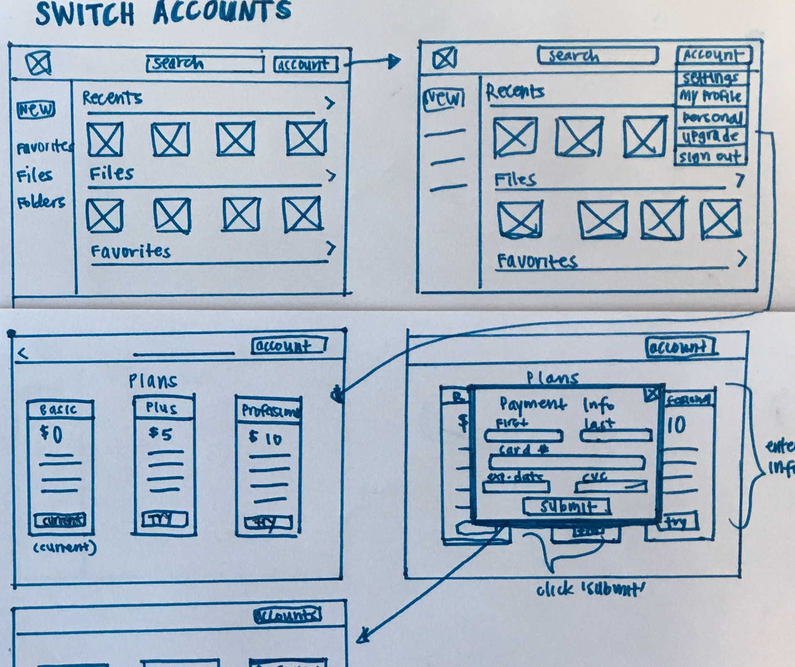
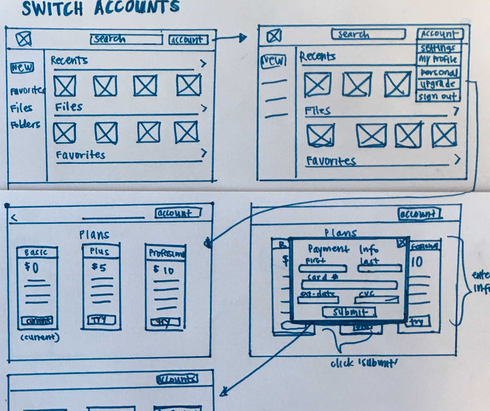

CLOUDROP
Create, save and share ideas and inspiration.
OVERVIEW
Cloudrop is a desktop and mobile cloud-based service redesigning the way users store, save and collaborate on files. It aims to simplify the process for users to save and share inspiration.
ROLES
User Research/ Prototyping/Visual
Design/ Brand and Identity
DELIVERABLES
User Surveys/ Personas/ Competitive analysis/
User stories & flows/Prototype/
Wireframes/ User testing/Visual design
TOOLS
Sketch/ InVision/ Adobe Illustrator/
Balsamiq
DURATION
8 weeks
THE PROBLEM
There are many cloud storage applications currently out on the market, but many possess cluttered dashboards, weak search capabilities and a lack of storage capacity. This can make it difficult and confusing to navigate throughout the app and find content. Cloudrop aims to minimize these frustrations.
THE SOLUTION
Cloudrop provides an intuitive experience through its simplistic layout and friendly colors, along with simple content management. Through an extensive process including user research, competitive analysis, and user testing, Cloudrop was created. This service allows users to easily categorize and locate content, upload and save files, and collaborate on files with others.
RESEARCH
USER RESEARCH
I wanted to get to know my target audience and existing cloud applications were being used. My main focus was to understand what features users value along with frustrations and inconsistencies in these current applications.
HIGHLIGHTS:
100%
of particpants use an online save & share service.
72%
agree storage space could be improved on. Tiered pricing was included to expand storage space capabilities.
50%
rely on organization of files and integration with existing apps
61%
believe sharing and collaboration of files as the most valued feature .
OVERALL
The majority of respondents value sharing and collaborating content quickly. They also look for clear organization of files and the ability to locate their content with ease. From the survey results, I interviewed two different users to discover their motivations, goals and frustrations, resulting in two distinct personas.
COMPETITIVE ANALYSIS
With a number of existing cloud services available, I took a closer look into three big competitors to better understand the market place and review their strengths and weaknesses. All offer functions to save, organize and share content. I focused on existing features and key differentiators to seek out opportunities where I could add the most value for the user.
DROPBOX is simplistic in its layout, but there is a lack of information in the dashboard which can be confusing for the user.
ICLOUD’s sync feature is convenient and the platform prides themselves on privacy.
GOOGLE DRIVE offers real time collaboration, great storage capacity and the ability to create a variety of files.
USER PERSONAS
JENN COLE
Student
Age: 23/ Location: Los Angeles, CA/Gender: Female
MOTIVATION
Jenn works on school projects in and outside of school, using both her laptop and mobile device to share documents. She values how easily accessible her files are from her cloud storage. She likes to organize and separate her files so she can share personal photos with friends and keep her school files for projects.
GOALS
- Files safe and secure in cloud storage
- Locate all files quickly and efficiently
- Aptly organizing saved content
FRUSTRATIONS
- Has to check both school and social accounts separately
- Some plans are too expensive
KATE DIAZ
Market Research Analyst
Age: 32/ Location: Los Angeles, CA/Gender: Female
MOTIVATION
As a Market Research Analyst, Kate works on multiple projects at once. She is typically conducting research and collecting data, so collaborating and sharing her findings are an important. She must synthesize her findings into large documents and create presentations for clients, creating various files such as documents, slides, and spreadsheets. She relies on quick accessbility and easy organization of files in order to successfully complete tasks and projects.
GOALS
- Organization with a clear hierarchy
- Easily collaborate on documents
- Easier ways to share and collaborate files
FRUSTRATIONS
- Unable to clearly differentiate between files
- Limited storage space
- Too much time spent finding different types of files in storage
MY GOALS
From continued research, my goal is to create a space where users are able to share content and collaborate on files, create a dasboard with a clear hierarchy of information, and allow for easy organization of content.
INFORMATION ARCHITECTURE
BRANDING
BRANDING STORY & LOGO
When starting to conceptualize a brand identity, I focused on the idea of space and safety. For the logo, I went through many iterations and ultimately chose a cloud to represent the platform. It symbolizes a self- contained space with an endless realm of possiblity, the perfect space to store ideas. The geometric shapes within the cloud symbolize digitized security within the platform.
Mindmaps and word association was used to create a name that was simple and
catchy.
I settled on Cloudrop due to its simple and easy nature, with ‘drop’
describing something being done with ease. Using Sketch and Adobe Illustrator, I
digitized the sketches and created different versions playing around with triangle
size, borders and colors.
COLORS
#248199
#0E5275
#489EB4
The brand logo is composed of three primary shades of blue. The deep blue shade represents trust and security while the brighter blue embodies creativitiy.
#F69B59
#EAFBFF
#EEEEEE
#F8F8F8
The secondary colors consists of shades of grey, a light blue and a soft orange. The soft orange has a warming effect, stimulating mental activity.
The branding is refined and modern, yet portrays a social and fun aspect through the use of color that appeals for both professional and social use.
TYPOGRAPHY
I used Liber Grotesque primarily for the headlines. Its rounded and harmonious structure represents the secure elements of the brand. I paired the sans serif font with Heebo, a humanist san serif that is modern yet approachable and easy to read.
WIREFRAMES & TESTING
WIREFRAMES
I started by sketching out a basic framework for both mobile an desktop versions that included screens for each user flow. I then used Balsamiq to create low fidelity wireframes, adding more detail and different variations of the dashboard. In creating my prototypes, I realized some steps that were overlooked. For example, there was a screen missing letting the user know when they had completed a task and no way for participants to go back to a screen. Constant iterations were made to keep both desktop and mobile versions consistent.
 

I worked with three participants in person to test a few actions. I tested the process of signing up for an account, uploading and sharing a file, and organizing files into a folder. Overall, the sign up process was smooth for all three participants. Due to the simplicity of the wireframes, some found it tricky differentiating between headers and action buttons in the mobile version when uploading a file. Another participant had trouble identifying the files on the desktop.
HIGH FIDELITY MOCKUPS
Assesing the feedback recieved from participants and implementing the branding elements, I created a set of hi- fidelity mockups while focusing on alignment and overall consistency. I conducted a second usability test to work out any kinks and a quick preference test on Usability Hub was conducted to test out preferred designs and solidify my choices.
landing page
dashboard
TESTING
Testing was done through clickable prototypes using inVision. Overall, participants were comfortable through each step and was able to complete most tasks with minor issues. The added detail, from text, color choice and font size made for greater legibility and contributed to smoother process. Suggestions to change one action button into four separate icons was implementing into the final design, minimizing the amount of clicks for the user.
Three separate preference tests were also conducted to improve visual design. Tests revolved around the color of the side bar on the dashboard, the color of pop up messages in the mobile version, and button shape.
preference 1 (67%)
preference 2 (33%)
INSIGHTS
WHAT I LEARNED
Building for the user.
Keeping my users in mind throughout the process from conception to finalization allowed me to stay focused on creating a product that an actual user might find valuable. Things that seem clear to me might not be clear for the user. Making changes based on the needs of the actual user instead of relying on my own preferences or assumptions was essential.
User testing and iteration.
User testing was invaluable in finalizing the application.
Most of the changes happened during this step, emphasizing the importance of research and testing in the early phases.
With that being said, presenting the user tests by giving clear and specific directions was important in minimizing confusion.
Constant testing and iteration was key!
If given more time, I would have tested more users in both the survey and first usablility test to gather a larger set of data, since most participants were students or within the same field of work.